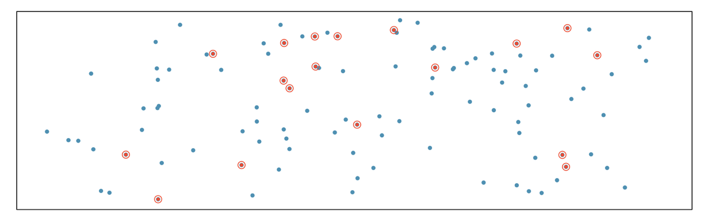
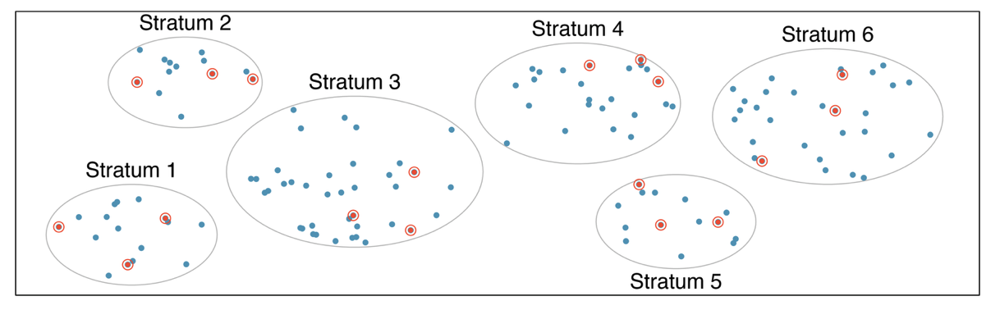
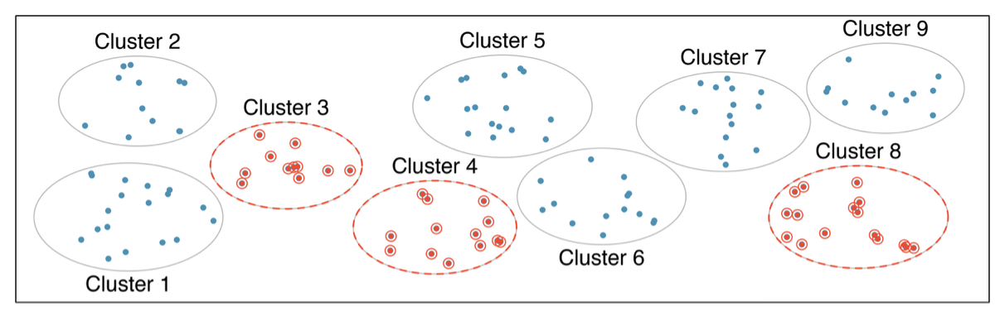
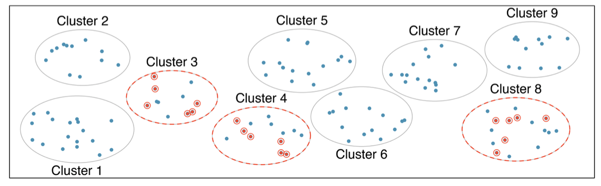
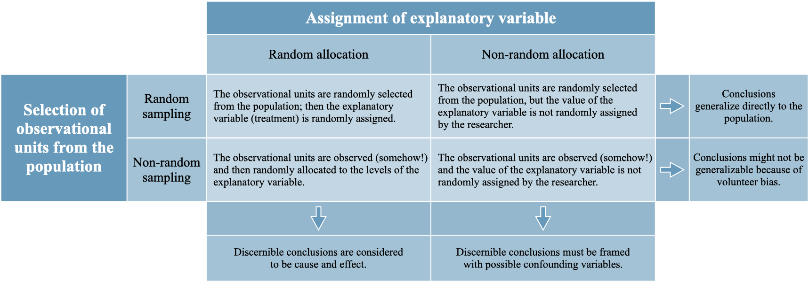
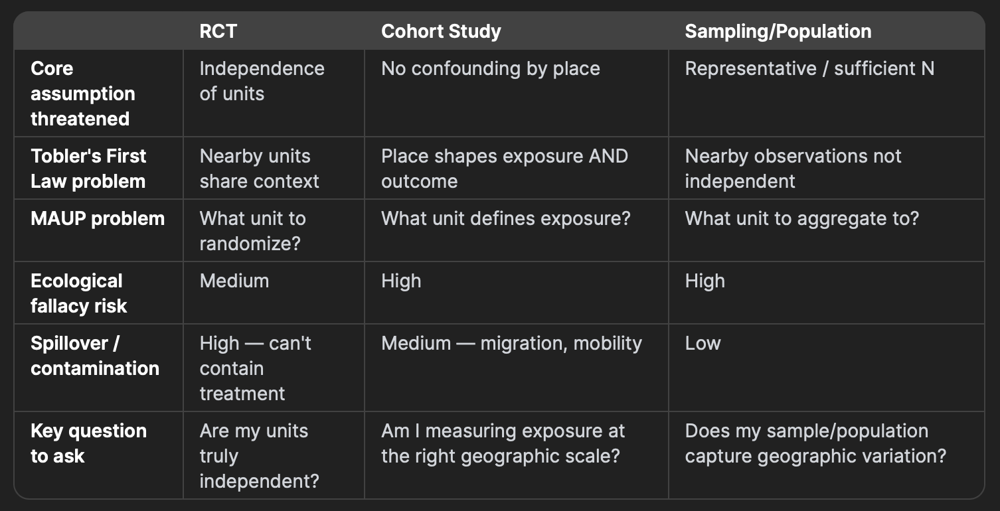

Quantitative Methods in Geographic Research
Sampling and Study Designs: Part 1
Reading Check
Why might a researcher choose stratified sampling instead of simple random sampling?
What does random assignment accomplish in a Randomized Control Trial (RCT)?
What is a confounding variable?
What is one important difference between an experiment and an observational study?
What is one difference between stratified sampling and cluster sampling
Simple Random Sampling

Stratified Random Sampling

- High variability across Strata, low variability within stratum
Cluster Sampling - single stage

- High variability within Cluster low variability within stratum
Multistage cluster sampling

Generalization and Inference

RCTs: Geographic Considerations
What an RCT Assumes
Units are independent: what happens to one unit doesn’t affect another
Random assignment removes confounding
Treatment and control groups are comparable
RCTs: Geographic Considerations
- Observations nearby may not be independent
Tobler’s First Law in action:
“Everything is related to everything else, but near things are more related than distant things.”
If you randomize individuals within a neighborhood, those individuals share air quality, noise, access to parks, social norms, food environments
This means your effective sample size is smaller than it appears
Standard statistical tests will be overconfident in your results
RCTs: Geographic Considerations
Problem 2: Spillover / Contamination Effects
A job training program in one neighborhood may attract businesses that benefit the neighboring control neighborhood
A vaccination campaign reduces disease in the unvaccinated control group through herd immunity
This is called interference or SUTVA violation (Stable Unit Treatment Value Assumption)
RCTs: Geographic Considerations
Problem 3: Places can be randomized, but they are randomized as clusters
Examples: schools, clinics, neighborhoods, counties
Clusters may differ in history, infrastructure, demographics, and baseline outcomes
Randomization helps create a comparison, but it does not make places identical
Cluster Randomized Control Trials usually require more clusters, larger samples, and attention to spillover and contamination
RCTs: Geographic Considerations
Problem 4: What is the appropriate unit of randomization?
- Individual, Household, Block, Neighborhood, County?
- The choice affects spillover, statistical power, treatment implementation, unit of inference, generalizability
- Geographic results may also change when researchers change the scale of analysis, or the boundaries used
- This is related to the modifiable areal unit problem (MAUP)
Cohort Studies
What a Cohort Study Assumes
You follow a group of people over time
You measure exposure and then outcome
Differences in outcome are due to differences in exposure
Cohort Studies
Problem 1: Geographic Confounding
Where people live shapes almost everything about them:
- Air and water quality, access to healthcare, food environment etc.
These are called place-based confounders — they travel together and are very hard to separate
Cohort Studies
Problem 2: Residential Sorting (Selection Into Place)
People do not live randomly — they sort themselves geographically by:
- Income, race and ethnicity, health, age etc.
This means geographic exposure is not randomly assigned
- Sicker people may live in poorer areas because they are sicker — or they may become sicker because they live there
Cause and effect are deeply entangled
Cohort Studies
Problem 3: Mobility and Changing Exposure
Cohort studies follow people over time
But people move and their geographic exposure changes
A person exposed to industrial pollution for 5 years, then moving to clean air, has a complex exposure history
This is a major source of exposure misclassification
Cohort Studies
Problem 4: The Ecological Fallacy
Drawing conclusions about individuals from group-level geographic data
We often measure exposure at the area level (neighborhood poverty rate, county pollution average) but care about individual outcomes
The relationship at one geographic scale does not transfer to another
Related to Simpson’s paradox
Summary
